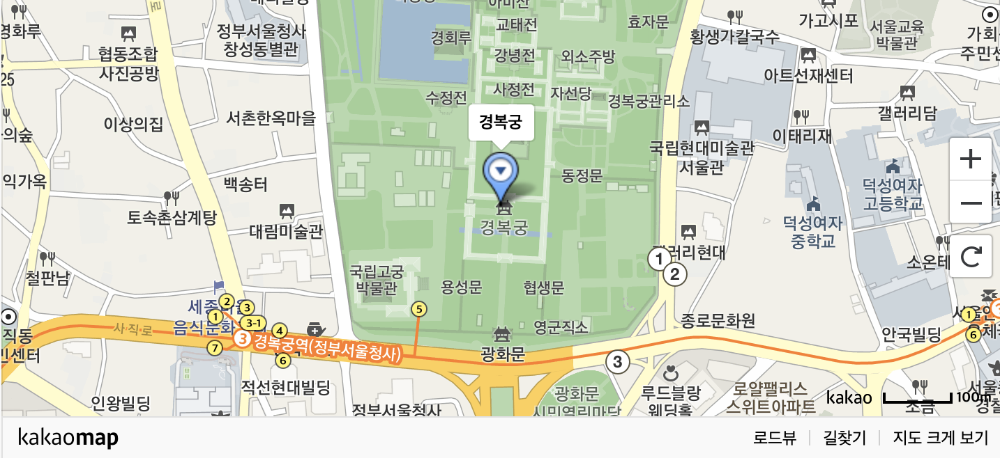

+ 오시는 길
- 주소
서울 종로구 사직로 161
- 전화
02-123-4567
주변 지하철�
주변 버스
- 마을 종로11
- 간선 109 | 171 | 272 | 601 | 606 | 710
- 지선 1020 | 7025
- 지하철
- 3호선 경복궁역 5번출구 도보 5분
- 5호선 광화문역 2번출구 도보 약 10분
- 버스
- 경복궁 남측 : 109, 171, 272, 601, 606, 1020, 7025
- 경복궁 서측 : 1020, 1711, 7016, 7018, 7022, 7212, 6011, 9703
- 자세한 버스노선은 서울시 홈페이지 (http://topis.seoul.go.kr/)를 참고하시기 바랍니다.
- 경복궁 주소 및 연락
- (우: 03045) 서울특별시 종로구 사직로 161
- (02) 3700 - 3900~1